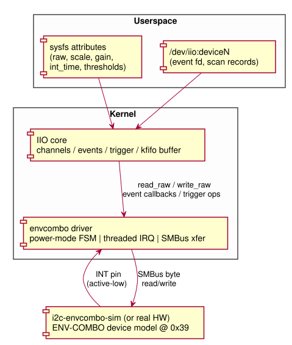
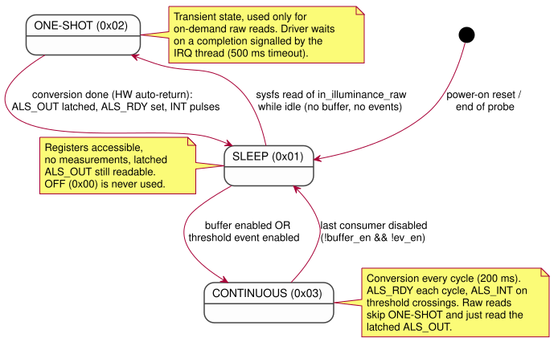
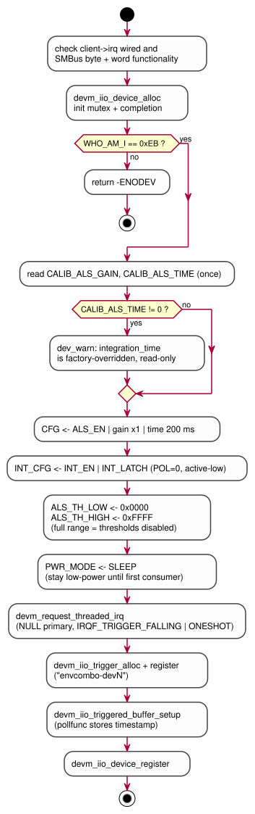
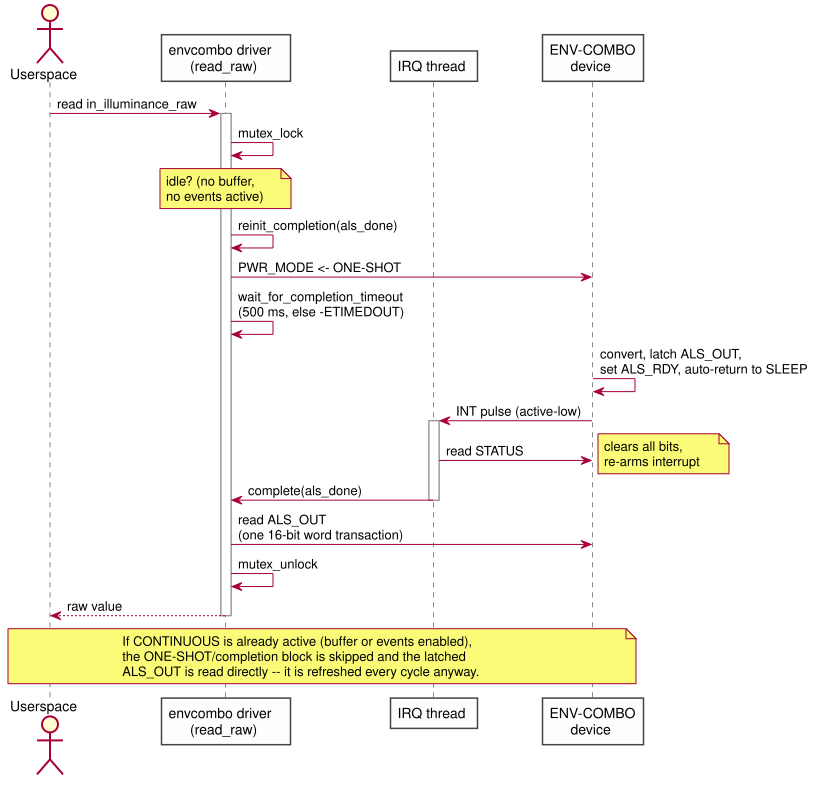
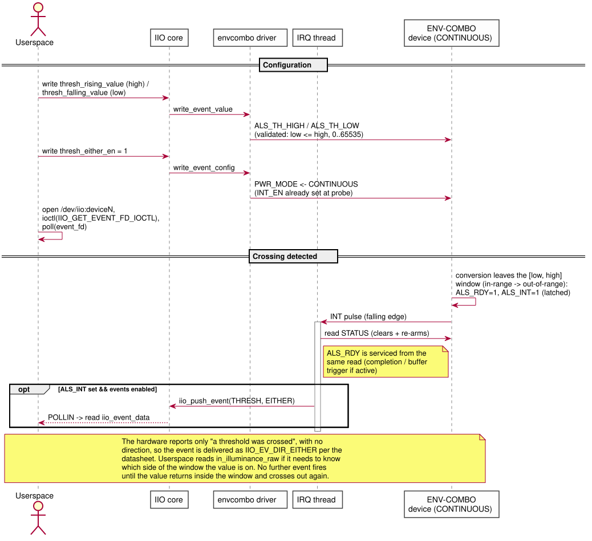
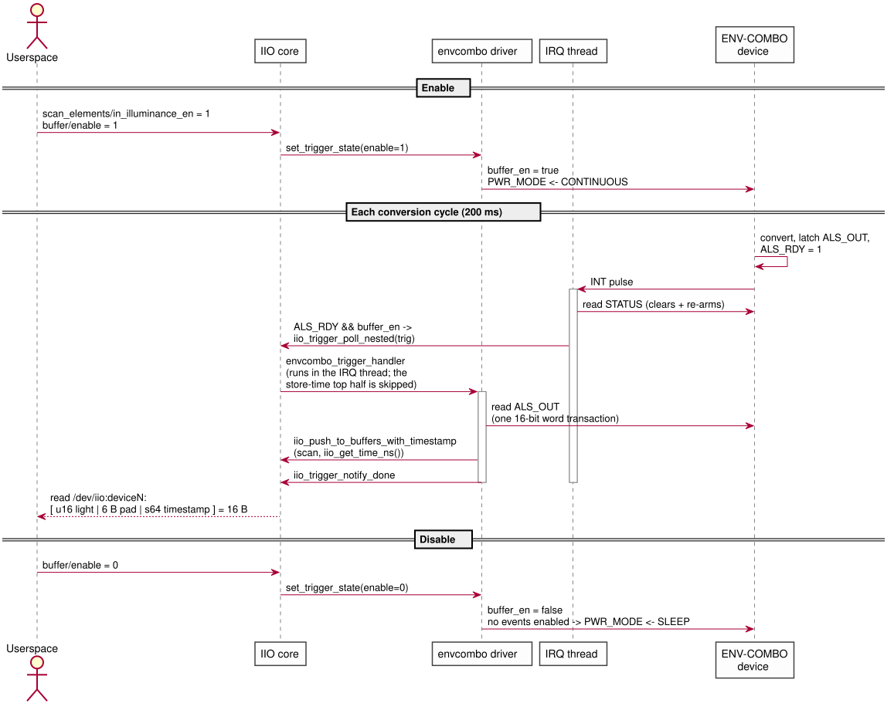

This document describes the architecture of the envcombo Linux IIO driver
(recipes-kernel/envcombo-driver/files/envcombo.c) for the fictional
ENV-COMBO I2C combo sensor. Only the ambient-light (ALS, IIO_LIGHT) path is
implemented; temperature and humidity are out of scope for this assignment.
|
Note
|
Diagrams are maintained as PlantUML sources in docs/diagrams/*.puml
and embedded as SVGs rendered into docs/diagrams/svg/. Regenerate after
editing with plantuml -tsvg -o svg docs/diagrams/*.puml.
|
1. System Overview
The driver sits between the IIO core and an I2C device at address 0x39.
In this project the device is provided by a simulator module
(i2c-envcombo-sim) that registers both the I2C adapter and the client
device, and delivers interrupts through a software IRQ domain. The driver is
completely unaware of the simulator — it would bind unchanged to real
hardware exposing the same register map.

The diagram shows two distinct communication paths between the device and the SoC:
-
I2C bus (SDA + SCL) — the driver’s only active path; all register reads and writes go here.
-
INT pin — a dedicated physical wire, separate from I2C, that the device asserts to interrupt the CPU. The driver never reads or writes this pin; the SoC’s interrupt controller detects its edge and wakes the IRQ thread.
INT_CFG (register 0x07) configures how the INT pin behaves (INT_EN,
INT_POL, INT_LATCH), but the pin itself is not part of the I2C bus.
When the device has data or a threshold crossing to report, it drives INT
low — the IRQ thread then reads STATUS over I2C to learn what happened.
2. Hardware Model (ALS-relevant subset)
2.1. Register map
| Addr | Register | Use by this driver |
|---|---|---|
0x00 |
WHO_AM_I |
Identity check at probe; must read |
0x04-0x05 |
ALS_OUT (MSB/LSB) |
Latched 16-bit big-endian ALS result |
0x06 |
CFG |
|
0x07 |
INT_CFG |
|
0x08-0x09 |
ALS_TH_LOW (MSB/LSB) |
Falling threshold (alert when value goes below) |
0x0A-0x0B |
ALS_TH_HIGH (MSB/LSB) |
Rising threshold (alert when value goes above) |
0x0C |
STATUS |
|
0x10 |
CALIB_ALS_GAIN |
Factory gain trim, multiplies effective gain |
0x11 |
CALIB_ALS_TIME |
Factory integration-time override (ms); non-zero = override |
0x12 |
PWR_MODE |
OFF |
All 16-bit fields are big-endian register pairs: MSB at the base address,
LSB at base + 1. The driver accesses each pair as a single SMBus word
transaction (i2c_smbus_read_word_swapped() /
i2c_smbus_write_word_swapped() behind envcombo_read_reg16() /
envcombo_write_reg16()), so a concurrent device-side update — e.g. a new
ALS sample latched in CONTINUOUS mode — can never tear the value between
the two bytes.
2.2. Device behavior (per datasheet)
- Power modes
-
The device powers up in SLEEP: registers are accessible but no measurements run. Writing ONE-SHOT triggers a single conversion; on completion the result is latched into ALS_OUT,
ALS_RDYis set, and the device returns to SLEEP automatically. CONTINUOUS runs periodic conversions (200 ms cycle in the simulator). OFF halts all activity; the driver never uses it, since SLEEP already takes no measurements while keeping latched values readable. - STATUS semantics
-
All STATUS bits are cleared by a read, which also re-arms the interrupt.
ALS_RDYmeans a new conversion result since the last STATUS read.ALS_INTflags a threshold crossing — a transition from in-range to out-of-range. It does not re-fire while the value stays out of range; the value must return in-range first. A crossing always coincides with new data (ALS_RDY), but the two flags are distinct. - Interrupt pin
-
The INT pin pulses whenever any STATUS bit transitions 0 → 1, with polarity selected by
INT_POL(0 = active-low, the power-on default).INT_LATCH=1keepsALS_INTset until STATUS is read even if the value returns in-range; withINT_LATCH=0the flag self-clears, which can lose events (see Design Decisions & Tradeoffs).Note the intentional opposition: STATUS bits go
0 → 1when an event fires (register flag convention:1= yes), while the physical INT pin goesHIGH → LOW(active-low electrical convention). They are two different representations of the same event — a bit value and a voltage level — and they move in opposite directions by design.Event fires STATUS bit: 0 → 1 (flag set: "event occurred") INT pin: HIGH → LOW (active-low pulse to the CPU)
3. Driver Architecture
3.1. Components and state
struct envcombo_data
+--------------------------------------------------------------+
| client i2c_client for SMBus byte access |
| lock mutex: serializes config & one-shot reads |
| als_done completion: IRQ thread -> raw-read waiter |
| trig IIO trigger, fired from the IRQ thread |
| als_gain_idx/als_time_idx shadow of CFG gain/time fields |
| calib_again/calib_atime factory trim, read once at probe |
| thresh_low/thresh_high shadow of ALS_TH_LOW/HIGH |
| ev_en threshold event enabled (sysfs) |
| buffer_en trigger/buffer active |
| scan { u16 light; s64 timestamp } __aligned(8) |
+--------------------------------------------------------------+
Locking model:
-
data→lock(mutex) protects all configuration paths (sysfs writes, power-mode changes) and the one-shot raw-read sequence. -
The threaded IRQ handler deliberately does not take the mutex: a raw read can hold it for up to 500 ms while waiting on the completion, and blocking the handler would delay re-arming the interrupt. Instead the handler snapshots
ev_en/buffer_enwithREAD_ONCE(), paired withWRITE_ONCE()on the sysfs write side. -
All resources are
devm_-managed; the driver has no.remove().
3.2. Power-mode state machine
The driver keeps the device in the lowest power state that satisfies the
currently active consumers. Two boolean inputs drive the FSM: buffer_en
(triggered buffer running) and ev_en (threshold event enabled).
envcombo_update_power_mode() recomputes the target mode whenever either
changes; ONE-SHOT is a transient state used only for on-demand raw reads
while otherwise idle.
PWR_MODE is driver-derived, not a userspace knob: there is no sysfs
attribute to set it. Userspace only toggles the standard IIO features — enabling/disabling the buffer (via set_trigger_state) and the threshold
event (via write_event_config) — and the driver maps that combination to
SLEEP or CONTINUOUS (CONTINUOUS while either is active, SLEEP once the last
one is disabled). This keeps the power state always consistent with what is
actually in use, which a directly-writable mode could not guarantee.

While CONTINUOUS is active, a sysfs raw read skips the ONE-SHOT round-trip and simply reads the latched ALS_OUT registers — they are refreshed every cycle anyway.
4. ALS Usage Flows
4.1. Probe / initialization

4.2. On-demand raw read (one-shot path)
cat /sys/bus/iio/devices/iio:deviceN/in_illuminance_raw while no buffer or
event is active:

4.3. Threshold event flow
Userspace configures in_illuminance_thresh_rising_value (→ ALS_TH_HIGH)
and in_illuminance_thresh_falling_value (→ ALS_TH_LOW), then enables the
single …_thresh_either_en switch. Enabling it drives the FSM to
CONTINUOUS (INT_CFG.INT_EN is already set at probe, since the data-ready
interrupt is needed for one-shot reads too).

The hardware reports only "a threshold was crossed" via the single
direction-less ALS_INT bit, so the event spec follows the datasheet: the
two threshold values are exposed through the rising/falling VALUE
attributes, while the event itself is enabled and delivered with
IIO_EV_DIR_EITHER. Userspace that needs to know which side of the window
was crossed reads the current value (see Design Decisions & Tradeoffs).
Threshold writes are validated: a rising value below the current falling
value (or vice versa), values outside 0..65535, and negative values are all
rejected with -EINVAL, so the window stays well-formed.
4.4. Triggered buffer flow
The driver registers its own IRQ-backed trigger; no external trigger is needed. Enabling the buffer drives the FSM to CONTINUOUS, and every conversion produces one scan record.

5. Userspace ABI
sysfs attribute (iio:deviceN/) |
Backing register | Semantics |
|---|---|---|
|
— |
|
|
ALS_OUT |
On-demand read; one-shot conversion when idle, latched value when CONTINUOUS |
|
CFG gain + CALIB_ALS_GAIN |
|
|
CFG[4:3] |
One of |
|
CFG[2:1] |
One of |
|
ALS_TH_HIGH |
Raw ALS counts ( |
|
ALS_TH_LOW |
Raw ALS counts ( |
|
power FSM |
Enables the (direction-less) crossing event and CONTINUOUS mode |
|
— |
Standard IIO triggered-buffer interface; scan: u16 light @ index 0 + s64 timestamp |
|
— |
Buffered scan records + |
6. Design Decisions & Tradeoffs
- Plain
i2c_smbusinstead of regmap -
The device has 19 byte-wide registers and the driver touches 13 of them (the other 6 are temperature/humidity registers, out of scope here); a regmap adds little. Decisive practical point:
CONFIG_REGMAP_I2Cis a hidden Kconfig symbol that in-tree drivers pull in viaselect, which an out-of-tree module cannot do cleanly. Register caching would be wrong anyway (STATUS is clear-on-read, ALS_OUT is hardware-latched). - Hybrid power strategy (SLEEP / ONE-SHOT / CONTINUOUS)
-
Matches the power-on default (SLEEP) and keeps the device idle until userspace actually uses it — no conversions, interrupts, or I2C traffic run while nothing is consuming ALS data — correct resource use that keeps the device in low-power SLEEP mode until something needs it. Tradeoff: more state tracking (two consumer flags
envcombo_update_power_mode()) than a naive "CONTINUOUS at probe" design, and the first raw read pays one conversion of latency (bounded by the 500 ms completion timeout). INT_LATCH=1-
With latching off,
ALS_INTself-clears once the value returns in-range. If that happens between the INT pulse and the threaded handler’s STATUS read, the event would be silently lost. Latching guarantees the handler observes every real crossing. Cost: none for this driver, since the single STATUS read both acknowledges and re-arms. - Threaded IRQ, single STATUS read
-
devm_request_threaded_irqwith a NULL primary handler (soIRQF_ONESHOTis mandatory) keeps all I2C traffic out of hard-IRQ context. One STATUS read serves every consumer at once — raw-read completion, buffer trigger, and threshold events can all result from the same pulse, since a crossing always coincides with new data. The INT pin pulses on each STATUS 0 → 1 transition, so the IRQ is requested asIRQF_TRIGGER_FALLING, matchingINT_POL=0(active-low), the power-on default the driver keeps. Because the trigger fires from thread context, the driver usesiio_trigger_poll_nested()(the plainiio_trigger_poll()is reserved for hard-IRQ context) and the buffer handler takes its own timestamp. IIO_EV_DIR_EITHERevents-
The hardware reports a crossing through a single direction-less
ALS_INTflag, so the driver follows the datasheet and pushes the event asIIO_EV_TYPE_THRESH/IIO_EV_DIR_EITHER(the in-tree pattern used by e.g.apds9960): rising/falling event specs carry only the two threshold values, a third EITHER spec carries the single enable. Synthesizing a direction in the driver by re-reading the sample would be guesswork during fast swings; the EITHER contract is honest about what the silicon knows. - Mutex-free IRQ thread
-
The raw-read path can hold
data→lockfor up to 500 ms (completion timeout). Taking that mutex in the IRQ thread would stall interrupt re-arming behind a slow reader, so the handler usesREAD_ONCE()snapshots ofev_en/buffer_eninstead, paired withWRITE_ONCE()writers. devm_-managed lifecycle-
Every resource (IIO device, trigger, buffer, IRQ) is device-managed and torn down in reverse order automatically; the driver needs no
.remove(). Theiio_trigger_get()reference taken forindio_dev→trigis dropped by the IIO core itself iniio_dev_release()— the driver must not add its own put (doing so underflows the trigger refcount on unbind). The device is left in SLEEP whenever no consumer is active, which is also the correct state to leave behind on unbind.
7. Source Layout
| Path | Role |
|---|---|
|
The IIO driver (this document) |
|
Provided bus + device simulator (reference only, not modified) |
|
Kernel config fragment (IIO core, buffer, trigger, kfifo) |
|
Rust userspace test harness |
|
Condensed 1-2 page design rationale (assignment deliverable) |